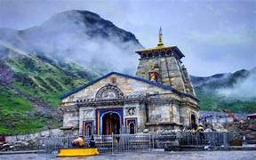
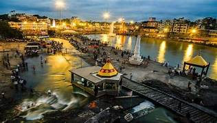

Varanasi (also known as Benares, Banaras, Benaras, Kashi, and Kasi) is a Hindu holy city on the banks of the river Ganga (Ganges) in Uttar Pradesh. Varanasi is to Hindus what Mecca is to Muslims and Vatican to Catholic Christians.
Kedarnath Temple is dedicated to Lord Shiva and is one of the twelve Jyotirlingas, making it one of the holiest sites for Hindus. It is part of the Chota Char Dham pilgrimage circuit and the Panch Kedar pilgrimage, which is associated with the Pandavas from the Mahabharata.
Nashik is significant in history, social life, and culture. The city is located on the banks of the Godavari River, making it a sacred site for Hindus around the world. During his 14-year exile from Ayodhya, Rama, the king of Ayodhya, is said to have made Nashik his home.